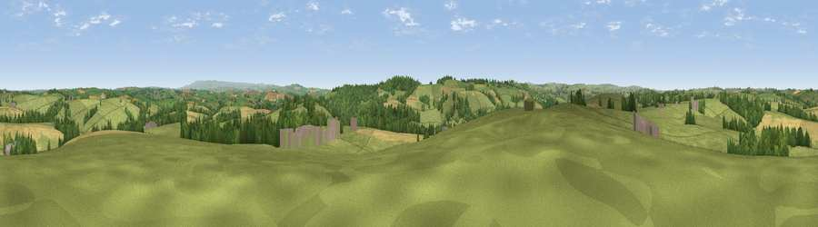

Viewpoint near Yeolmbridge
#20017 in England · top 36% of its area beats it · near YeolmbridgeThe view, rendered

A 360° render of this exact spot computed from the terrain model, tree cover and land cover — summer colours, afternoon light, calibrated against photographs of famous viewpoints. Real trees, hedges and buildings will differ in detail.
The panorama
Grey silhouette: terrain skyline in each direction (720 bearings, Earth curvature and refraction included). Dashed green: skyline with trees (+15 m) and buildings (+8 m) as obstacles. Blue strip: how far the ground is visible on each bearing.
Where the view opens
Wedge length = distance to the farthest visible ground on that bearing (vegetation-aware). Rings at 10, 25 and 50 km.
What fills the view
71% grassland · 15% woodland · 13% cropland · 1% built-up
Angular shares of the visible panorama (visual magnitude), not map area. Landscape diversity 0.36 (0–1 Shannon).
Key numbers
More beautiful places nearby
The staircase of upgrades: each row has a higher view potential than everything closer. Driving times are estimates from straight-line distance, calibrated against real road routing — check an actual route before setting out.
| Place | Direction | Drive | Score |
|---|---|---|---|
| Viewpoint near St Stephens | S · 2 km | ~6 min | 55.2 |
| Viewpoint near Egloskerry | SW · 4 km | ~9 min | 57.3 |
| Viewpoint near Tregeare | WSW · 7 km | ~14 min | 59.9 |
| Viewpoint near Tinhay | ESE · 9 km | ~18 min | 61.3 |
| Viewpoint near Bradstone | SE · 11 km | ~21 min | 64.1 |
| Viewpoint near Whitstone | NNW · 12 km | ~22 min | 69.4 |
| Viewpoint near Warbstow | W · 12 km | ~22 min | 71.2 |
| Viewpoint near Henwood | SSW · 15 km | ~27 min | 76.2 |
50.67202, -4.38209 · source: screening · position refined by local search. Computed location — check access rights before visiting.